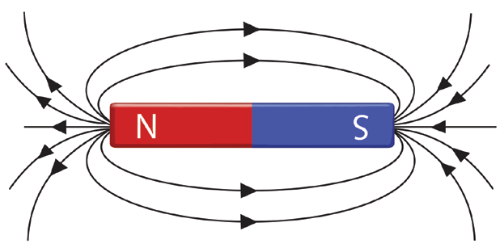
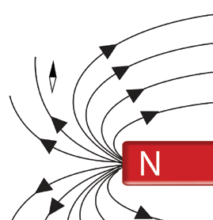
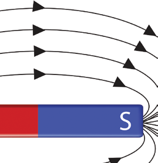

Magnetic lines of force
Recall that iron filings become aligned in the presence of a magnetic field. This alignment displays the lines of force in a magnetic field. The magnetic lines of force emerge from the north (N) pole to the south (S) pole of a magnet. They are crowded together or become denser at the poles of a magnet, showing that the magnetic field is strong at the poles. Away from the poles, the field is weak, hence, magnetic lines formed are less dense. Magnetic lines of force show the direction of the magnetic force. The direction of the magnetic lines of force at any point is the direction in which the north pole of a small magnet points when located at that point, as illustrated using arrows in Figure 3.32.

Figure 3.32: Magnetic field lines around a bar magnet
The lines of force point away from the north pole of a magnet and towards the south pole. The direction at any point along a line of force is therefore defined as the path that a magnetic north pole would tend to take. The north end of a compass needle could also point in the same direction as shown in Figure 3.33.


Figure 3.33: Compass needle direction around a bar magnet
Properties of magnetic lines of force
Some of the properties of magnetic lines of force are as follows:
- 1. Magnetic lines of force are continuous and always form closed loops.
- 2. Lines of force from the bar magnet leave the north pole